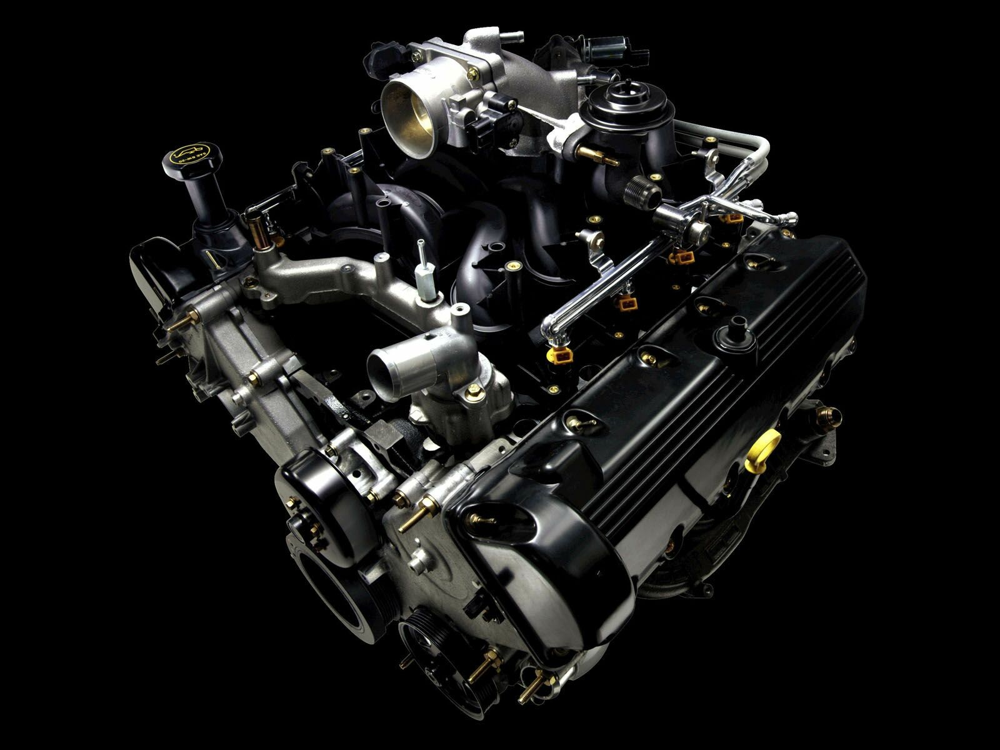

Mechanical Engineering , technically it is the application of the principles and problem-solving techniques of engineering from design to manufacturing to the marketplace for any object. Mechanical engineers analyze their work using the principles of motion, energy, and force—ensuring that designs function safely, efficiently, and reliably, all at a competitive cost.
Mechanical engineers make a difference. That's because mechanical engineering careers center on creating technologies to meet human needs. Virtually every product or service in modern life has probably been touched in some way by a mechanical engineer to help humankind.
This includes solving today's problems and creating future solutions in health care, energy, transportation, world hunger, space exploration, climate change, and more.
Mechanical engineering combines creativity, knowledge and analytical tools to complete the difficult task of shaping an idea into reality.
